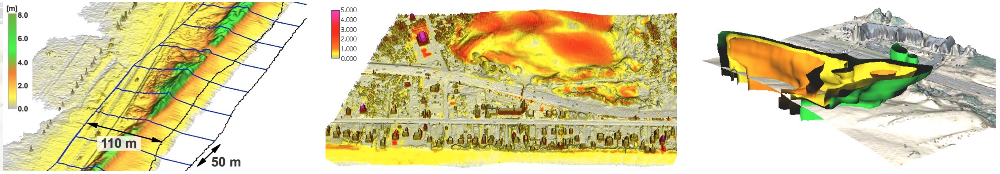

Landscape Dynamics
- Water, wind, gravitation, plants, animals and humans continuously change landscape surface
- Land surface processes are poorly understood and our predictive capabilities are limited
- Hazard management decisions are often based on insufficient information
Advances in 3D mapping
- Lidar and sUAS structure from motion: increased capacity to
map 3D landscapes and assess the change on (almost) continuous basis
- Development of tools for terrain time series analysis
- Data for predictive models development, calibration and validation


Multivariate terrain time series analysis
- 1D lines - transects, horizontal migration of line features: shorelines, dune crests, channels
- 2D rasters - per cell statistics, core and envelope, rate of vertical change
- 3D rasters - space-time cube contour evolution isosurfaces

Hardin, E., Mitasova, H., Tateosian, L., Overton, M., 2014, GIS-based Analysis of Coastal Lidar Time-Series, Springer Briefs in Computer Science, Springer, New York, 84 p.
Analysis of migrating landforms
Horizontal migration is often associated with change in landform geometry
which is hard to measure with standard transects
case study: Jockey's Ridge dune
horizontal migration was measured by extracting crests and manually measuring distances along transects
resulting in spatially agreggated rates

DEM time series animation
reveals complex change in dune geometry as it migrates:
Sand dune on NC coast: Jockey's Ridge 1974 - 2012


similar famous coastal dunes: Slowinski National Park, Poland, The dune of Pyla in France, Japan
Space-Time Cube visualization
Evolution at given elevation (contour evolution) isosurfaces z = f (x,y,t) , z=16m and 20m


Gradient field of horizontal migration
Quantitative spatially distributed measure of landform migration: magnitude and direction
do the rates of migration change with elevation? does the direction of migration change over time
migration rate at given elevation - migration of contour
segment time series of zi=c, i=1,...n into non-intersecting segments, then
t = gc(x,y)